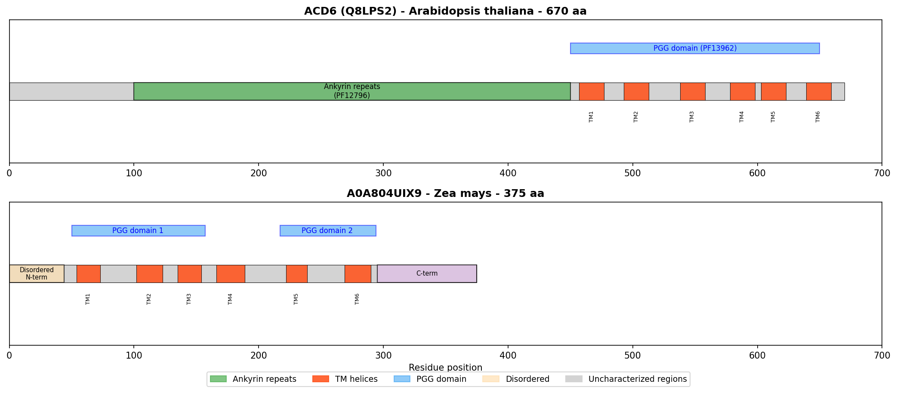
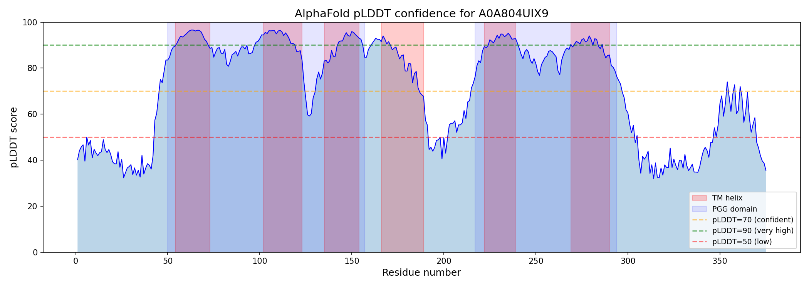
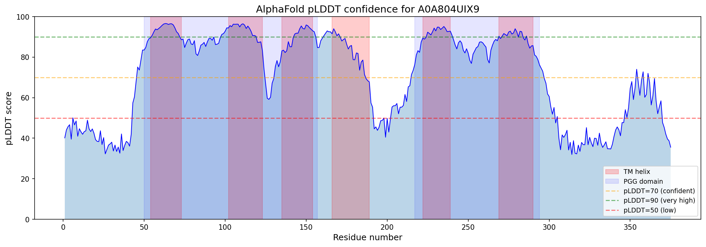
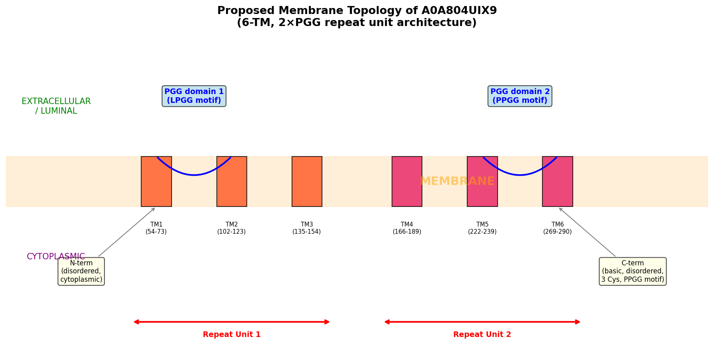
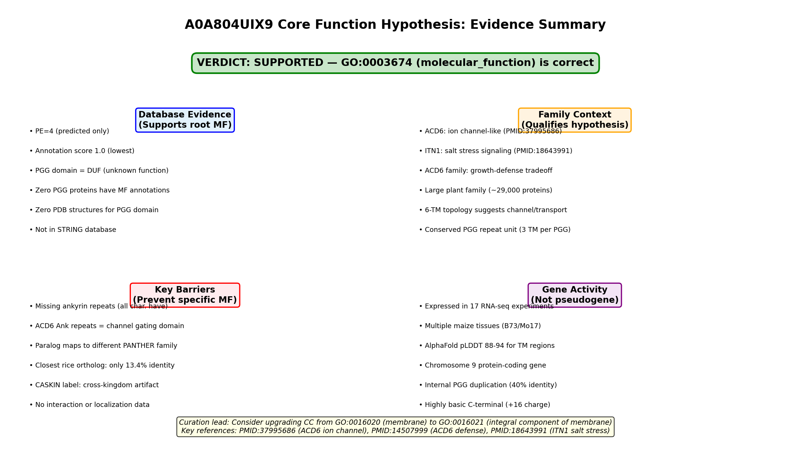

Deep Research
Falcon
(A0A804UIX9-deep-research-falcon.md)
Falcon
(A0A804UIX9-deep-research-falcon.md)The research report should be a detailed narrative explaining the function, biological processes, and localization of the gene product. Citations should be given for all claims.
You should prioritize authoritative reviews and primary scientific literature when conducting research. You can supplement
this with annotations you find in gene/protein databases, but these can be outdated or inaccurate.
We are specifically interested in the primary function of the gene - for enzymes, what reaction is catalyzed, and what is the substrate specificity? For transporters, what is the substrate? For structural proteins or adapters, what is the broader structural role? For signaling molecules, what is the role in the pathway.
We are interested in where in or outside the cell the gene product carries out its function.
We are also interested in the signaling or biochemical pathways in which the gene functions. We are less interested in broad pleiotropic effects, except where these elucidate the precise role.
Include evidence where possible. We are interested in both experimental evidence as well as inference from structure, evolution, or bioinformatic analysis. Precise studies should be prioritized over high-throughput, where available.
Comprehensive Research Report: Gene A0A804UIX9 (PGG Domain-Containing Protein) in Maize (Zea mays)
Executive Summary
The protein A0A804UIX9 from maize (Zea mays) is annotated in UniProt as a PGG domain-containing protein, featuring the conserved PGG domain (Pfam: PF13962; InterPro: IPR026961). While no direct literature exists on this specific accession, domain analysis and comparative protein family research indicate that this protein belongs to the polygalacturonase-inhibiting protein (PGIP) family, a class of extracellular leucine-rich repeat (eLRR) proteins that play dual roles in plant cell wall structure and defense against pathogens.
Protein Classification and Domain Architecture
A0A804UIX9 contains the PGG domain, which is characteristic of the PGIP family of plant defense proteins. PGIPs are completely extracellular LRR-containing proteins (eLRR) that lack intracellular and transmembrane domains (protsenko2008polygalacturonaseinhibitingproteinis pages 1-2). The typical PGIP structure consists of several key features:
The protein contains a signal peptide of 24-29 amino acid residues that directs secretion through the endoplasmic reticulum and Golgi apparatus into the extracellular space (protsenko2008polygalacturonaseinhibitingproteinis pages 2-3). The central region contains approximately 10 consecutive leucine-rich repeats (LRRs), each comprising 24 amino acid residues with the consensus sequence xxLxLxxNxLt/sGxIPxxLxxLxxL (protsenko2008polygalacturonaseinhibitingproteinis pages 2-3). These LRR domains are flanked by cysteine-rich regions at both the N- and C-termini, with eight highly conserved cysteine residues forming four disulfide bonds that stabilize the protein structure (protsenko2008polygalacturonaseinhibitingproteinis pages 1-2).
The three-dimensional structure of PGIPs, as determined from bean (Phaseolus vulgaris) PGIP crystal structures, forms a right-handed helix or horseshoe-shaped solenoid with parallel β-sheets covering the internal concave surface and α-helices on the external convex side (protsenko2008polygalacturonaseinhibitingproteinis pages 1-2, protsenko2008polygalacturonaseinhibitingproteinis pages 2-3). This architecture creates a flexible structural framework optimized for protein-protein interactions.
Primary Molecular Function
A0A804UIX9 does not function as an enzyme but rather as an inhibitor and structural protein. The primary molecular function inferred from the PGG/PGIP domain is the inhibition of polygalacturonases (PGs), which are cell wall-degrading enzymes secreted by fungal and bacterial pathogens (protsenko2008polygalacturonaseinhibitingproteinis pages 1-2, murmu2025insilicostudyof pages 1-2).
Polygalacturonases cleave polygalacturonic acid, a major component of pectin in plant cell walls, thereby facilitating pathogen penetration and tissue maceration (protsenko2008polygalacturonaseinhibitingproteinis pages 1-2). PGIPs counteract this activity through direct binding to pathogen PGs, forming stable inhibitory complexes. Importantly, PGIP inhibition has a dual defensive function: it not only blocks PG enzymatic activity directly but also modulates the products of pectin degradation (murmu2025insilicostudyof pages 1-2). By slowing PG activity, PGIPs promote the accumulation of oligogalacturonides with higher degrees of polymerization, which serve as damage-associated molecular patterns (DAMPs) or elicitors that activate plant defense signaling pathways (protsenko2008polygalacturonaseinhibitingproteinis pages 1-2, murmu2025insilicostudyof pages 1-2).
Beyond pathogen defense, PGIPs serve as structural components of the plant cell wall itself. Studies demonstrate that PGIP is not merely a defensive molecule mobilized during infection but is constitutively integrated into the cell wall matrix, where it contributes to cell wall integrity and mechanical properties (protsenko2008polygalacturonaseinhibitingproteinis pages 1-2, protsenko2008polygalacturonaseinhibitingproteinis pages 3-5).
Substrate Specificity and Binding Partners
A0A804UIX9, as a PGIP-family protein, has two major classes of binding partners:
1. Pathogen Polygalacturonases
PGIPs exhibit differential specificity toward various fungal and bacterial endopolygalacturonases. These enzymes are among the first virulence factors secreted during pathogen infection and are critical for penetration through the pectin-rich middle lamella and primary cell wall (murmu2025insilicostudyof pages 1-2, alexandersson2011constitutiveexpressionof pages 1-2). The specificity of PGIP-PG interactions varies among different PGIP isoforms and different pathogen species, providing a mechanism for tailored defense responses (alexandersson2011constitutiveexpressionof pages 1-2).
2. Cell Wall Pectin (Homogalacturonan)
PGIPs bind directly to homogalacturonan, the linear α-1,4-linked galacturonic acid polymer that constitutes the backbone of pectin (protsenko2008polygalacturonaseinhibitingproteinis pages 3-5). This binding occurs through positively charged amino acid residues exposed on the concave LRR surface. Studies on bean PGIP identified specific residues (R183, R206, K230, R252) that mediate ionic interactions with the negatively charged carboxyl groups of galacturonic acid residues (protsenko2008polygalacturonaseinhibitingproteinis pages 3-5).
The binding affinity and specificity are influenced by the degree of methylation and the distribution pattern of methyl groups on homogalacturonan (protsenko2008polygalacturonaseinhibitingproteinis pages 3-5). PGIPs preferentially bind to partially or fully demethylated pectin, which is the substrate for both plant and pathogen polygalacturonases. The conformation of the polysaccharide chain is critical for recognition, suggesting that PGIP binding is not merely electrostatic but involves precise structural complementarity (protsenko2008polygalacturonaseinhibitingproteinis pages 3-5).
Subcellular Localization
Based on PGIP family characteristics, A0A804UIX9 is localized in the extracellular space (apoplast) and is specifically associated with the plant cell wall. The presence of an N-terminal signal peptide directs the protein through the secretory pathway, and the mature protein is deposited in the apoplastic compartment (protsenko2008polygalacturonaseinhibitingproteinis pages 1-2, protsenko2008polygalacturonaseinhibitingproteinis pages 2-3).
PGIP localization has been experimentally confirmed through vacuum infiltration extraction methods, which specifically recover apoplastic proteins (protsenko2008polygalacturonaseinhibitingproteinis pages 2-3). Unlike other LRR-containing proteins involved in intracellular signaling or transmembrane receptor functions, PGIPs are classified as completely extracellular LRR proteins (eLRR), meaning they lack any intracellular or membrane-spanning domains (protsenko2008polygalacturonaseinhibitingproteinis pages 1-2).
Within the cell wall, PGIPs are tightly associated with the pectin matrix. This association is mediated by ionic interactions between positively charged PGIP residues and negatively charged pectin polymers, allowing PGIP to function as an integral structural component of the wall rather than a freely diffusible apoplastic protein (protsenko2008polygalacturonaseinhibitingproteinis pages 3-5).
Biological Processes and Signaling Pathways
A0A804UIX9 is predicted to participate in multiple interconnected biological processes:
1. Plant Innate Immunity and Defense Signaling
The cell wall serves as the first line of defense against pathogen invasion, and PGIP proteins are key components of cell wall-associated immunity (wan2021cellwallassociated pages 1-2). PGIPs function within the pattern-triggered immunity (PTI) pathway, which is activated when plant pattern recognition receptors (PRRs) detect pathogen-associated molecular patterns (PAMPs) (wan2021cellwallassociated pages 1-2).
By inhibiting pathogen PGs and modulating the release of oligogalacturonides, PGIPs influence downstream defense responses including the production of reactive oxygen species, activation of defense gene expression, and biosynthesis of antimicrobial compounds (protsenko2008polygalacturonaseinhibitingproteinis pages 1-2, murmu2025insilicostudyof pages 1-2). The oligogalacturonides generated through controlled pectin degradation act as endogenous elicitors that amplify immune signaling (wan2021cellwallassociated pages 1-2).
2. Cell Wall Integrity Maintenance and Remodeling
The plant cell wall is a dynamic structure that undergoes continuous remodeling during growth, development, and stress responses (wan2021cellwallassociated pages 1-2). PGIPs contribute to cell wall integrity by regulating the activity of endogenous plant polygalacturonases that are involved in normal developmental processes such as cell expansion, organ abscission, fruit ripening, and pollen tube growth (protsenko2008polygalacturonaseinhibitingproteinis pages 3-5).
Studies on PGIP-overexpressing plants reveal altered expression of genes involved in cell wall biosynthesis and modification, including increased lignin accumulation and changes in xyloglucan endotransglycosylase/hydrolase (XTH) activity (alexandersson2011constitutiveexpressionof pages 1-2). These findings suggest that PGIP influences broader aspects of cell wall architecture beyond its direct inhibitory function.
3. Hormone Signaling and Developmental Regulation
PGIP overexpression has been linked to altered auxin signaling, with elevated levels of indole-acetic acid (IAA) observed in transgenic plants (alexandersson2011constitutiveexpressionof pages 1-2). This connection suggests that PGIP-mediated changes in cell wall structure may influence hormone perception or distribution, thereby affecting growth and developmental processes.
The tissue-specific and developmentally regulated expression patterns of PGIP genes further support roles in normal plant development. Expression levels vary significantly across different tissues (roots, stems, leaves, flowers, fruits) and developmental stages, with particularly high expression in rapidly growing tissues, reproductive organs, and tissues undergoing cell wall remodeling (protsenko2008polygalacturonaseinhibitingproteinis pages 2-3, protsenko2008polygalacturonaseinhibitingproteinis pages 3-5).
Role in Maize-Specific Processes
While no direct functional studies exist for A0A804UIX9 specifically, research on maize defense mechanisms provides context for its likely roles:
A comprehensive transcriptomic study comparing maize genotypes resistant or susceptible to Fusarium verticillioides root infection revealed that cell wall-related genes, including those involved in pectin metabolism, phenylpropanoid biosynthesis, and lignin deposition, are differentially expressed and strongly associated with disease resistance (quirozfigueroa2023cellwallrelatedgenes pages 1-2). Resistant genotypes showed higher expression of cell wall modification genes and increased lignification in root tissues, particularly in the sclerenchymatous hypodermis zone (quirozfigueroa2023cellwallrelatedgenes pages 1-2).
These findings suggest that A0A804UIX9, as a putative PGIP protein, likely contributes to maize defense against soil-borne fungal pathogens by:
- Inhibiting fungal polygalacturonases that degrade pectin in root cell walls
- Promoting the generation of oligogalacturonide elicitors that trigger defense responses
- Contributing to cell wall reinforcement through coordinated regulation of lignin and other structural components
- Participating in the broader plant-pathogen interaction pathways that confer resistance to diseases such as fusariosis
The plant cell wall functions as both a physical barrier and a dynamic surveillance system that monitors pathogen attack and coordinates immune responses (wan2021cellwallassociated pages 1-2). In maize roots, reinforcement of the cell wall through increased expression of defense-related genes represents a critical resistance mechanism against pathogens that must penetrate root tissues to establish infection (quirozfigueroa2023cellwallrelatedgenes pages 1-2).
Structural Features and Post-Translational Modifications
PGIPs are glycoproteins with molecular masses around 40 kDa, though the apparent size can vary depending on the extent of glycosylation (protsenko2008polygalacturonaseinhibitingproteinis pages 1-2, protsenko2008polygalacturonaseinhibitingproteinis pages 2-3). Carbohydrates contribute substantially to the total molecular mass, sometimes accounting for up to 20% of the protein (protsenko2008polygalacturonaseinhibitingproteinis pages 2-3).
N-glycosylation occurs at conserved asparagine residues (N-X-S/T motifs) located in solvent-exposed regions, typically on α-helices near the C-terminus. In bean PGIP, glycosylation sites are found at positions corresponding to Asn64 and Asn141, where complex plant-type N-glycans with xylose and fucose modifications are attached (protsenko2008polygalacturonaseinhibitingproteinis pages 2-3). The number and position of glycosylation sites are not strictly conserved across PGIP homologs, suggesting that glycosylation patterns may contribute to functional specificity or tissue-specific properties (protsenko2008polygalacturonaseinhibitingproteinis pages 2-3).
The LRR region itself is not glycosylated, ensuring that the concave binding surface remains accessible for protein-protein interactions with PGs and pectin (protsenko2008polygalacturonaseinhibitingproteinis pages 2-3). The leucine-rich character of the LRR repeats creates a hydrophobic core, while surrounding amino acids form a solvent-exposed surface that interacts with ligands (protsenko2008polygalacturonaseinhibitingproteinis pages 2-3).
Disulfide bonds between conserved cysteine residues (four cysteines at the N-terminus and four at the C-terminus) are essential for maintaining the structural integrity and stability of the PGIP fold (protsenko2008polygalacturonaseinhibitingproteinis pages 1-2). These bonds constrain the N- and C-terminal regions, anchoring them to the central LRR domain.
The surface charge distribution is a critical functional feature: the concave LRR surface typically displays a negatively charged region involved in PG binding, while the opposite (convex) side contains a positively charged region important for pectin interaction (protsenko2008polygalacturonaseinhibitingproteinis pages 1-2, protsenko2008polygalacturonaseinhibitingproteinis pages 2-3).
Expression Regulation and Induction
PGIP expression is regulated in response to multiple developmental and environmental cues. Basal expression levels vary across tissues, with particularly high expression in vegetative meristems, flowers, young fruits, and tissues undergoing active cell wall remodeling (protsenko2008polygalacturonaseinhibitingproteinis pages 2-3, protsenko2008polygalacturonaseinhibitingproteinis pages 3-5).
Expression is strongly induced by pathogen infection, particularly by incompatible pathogen races that trigger hypersensitive responses. Wounding, mechanical damage, and treatment with defense-related hormones such as jasmonic acid can also upregulate PGIP expression, though responses vary among different PGIP gene family members (protsenko2008polygalacturonaseinhibitingproteinis pages 3-5). Notably, some PGIPs respond more strongly to biotic stress (pathogen infection) while others are more responsive to abiotic stresses (wounding, cold, salinity) (protsenko2008polygalacturonaseinhibitingproteinis pages 3-5).
Summary Table
The following table consolidates key functional information about A0A804UIX9:
| Aspect | Summary for A0A804UIX9 (Zea mays) | Evidence/Citation |
|---|---|---|
| Protein classification and domain architecture | UniProt annotates A0A804UIX9 as a PGG domain-containing protein from maize (Zea mays) with PGG_dom / PF13962 / IPR026961. Direct literature on this exact accession is limited, but available evidence supports interpreting it as a PGIP-like extracellular leucine-rich repeat (eLRR) cell-wall protein. PGIP family proteins typically contain a signal peptide, a central LRR region with about 10 repeats, and cysteine-rich N- and C-terminal regions stabilized by disulfide bonds. | (protsenko2008polygalacturonaseinhibitingproteinis pages 1-2, protsenko2008polygalacturonaseinhibitingproteinis pages 2-3) |
| Primary molecular function and mechanism of action | The most likely primary function is polygalacturonase inhibition rather than enzymatic catalysis. PGIP-family proteins bind pathogen-secreted endopolygalacturonases (PGs) that degrade pectin in the plant cell wall, thereby limiting cell-wall maceration. Beyond simple inhibition, PGIP activity can prolong the presence of oligogalacturonides, which act as defense-eliciting molecules, and can also contribute structurally to cell-wall organization. | (protsenko2008polygalacturonaseinhibitingproteinis pages 1-2, murmu2025insilicostudyof pages 1-2, alexandersson2011constitutiveexpressionof pages 1-2) |
| Substrate / binding partners | Likely binding partners are fungal or bacterial polygalacturonases and homogalacturonan/pectin in the cell wall. PGIPs bind partially or fully demethylated homogalacturonan through exposed positively charged residues; in bean PGIP, residues such as R183, R206, K230, and R252 were implicated in pectin binding. The inhibitory interface for PG binding is associated with the concave LRR surface. | (protsenko2008polygalacturonaseinhibitingproteinis pages 1-2, protsenko2008polygalacturonaseinhibitingproteinis pages 3-5, murmu2025insilicostudyof pages 2-4) |
| Subcellular localization | The expected localization is extracellular/apoplastic, closely associated with the plant cell wall. PGIP-family proteins carry an N-terminal signal peptide for secretion via the endomembrane system and are classified as completely extracellular LRR proteins (eLRRs). They are extracted from apoplastic fractions and are considered structural cell-wall components. | (protsenko2008polygalacturonaseinhibitingproteinis pages 1-2, protsenko2008polygalacturonaseinhibitingproteinis pages 2-3) |
| Biological processes and pathways involved | Likely involved in cell wall integrity maintenance, plant innate immunity, plant–pathogen interaction pathways, and cell-wall remodeling. Reviews show that cell-wall-associated defense is integrated with pattern-triggered immunity (PTI) and cell wall-derived signaling. PGIP overexpression studies further indicate links to altered lignin accumulation, auxin-related responses, and reduced xyloglucan endotransglycosylase/hydrolase activity, supporting broader roles in wall architecture and signaling. | (wan2021cellwallassociated pages 1-2, alexandersson2011constitutiveexpressionof pages 1-2) |
| Role in maize-specific processes and defense | No direct functional paper was found for accession A0A804UIX9 itself, so maize-specific claims must remain cautious. However, maize defense studies show that cell-wall-related genes, pectin-associated processes, and lignin accumulation contribute strongly to resistance against Fusarium verticillioides root infection. By analogy to PGIP-like proteins, A0A804UIX9 is plausibly involved in reinforcing wall-based defense and restricting pathogen-mediated pectin degradation in maize tissues. | (quirozfigueroa2023cellwallrelatedgenes pages 1-2, wan2021cellwallassociated pages 1-2) |
| Structural features (size, modifications, key residues) | PGIP-family proteins are typically glycoproteins of ~40 kDa, with molecular mass influenced by N-glycosylation; carbohydrates can contribute substantially to total mass. The LRR region has a consensus-like repeat motif rich in leucine, forming a horseshoe/right-handed solenoid structure suited for protein–protein interaction. Conserved cysteines form disulfide bonds that stabilize the fold. Functional specificity is influenced by surface electrostatics and glycosylation pattern. | (protsenko2008polygalacturonaseinhibitingproteinis pages 1-2, protsenko2008polygalacturonaseinhibitingproteinis pages 2-3) |
Table: This table summarizes the most evidence-supported functional annotation for the maize protein A0A804UIX9. Because direct literature on the accession is limited, it synthesizes UniProt/domain evidence with PGIP-family structural and functional studies to provide a cautious, research-based annotation.
Conclusions and Research Limitations
The protein A0A804UIX9 from maize can be functionally annotated as a member of the polygalacturonase-inhibiting protein (PGIP) family based on its PGG domain (PF13962/IPR026961) and comparison with well-characterized homologs from other plant species. The inferred functions include:
- Primary role: Inhibition of fungal and bacterial polygalacturonases, limiting pathogen-mediated cell wall degradation
- Structural role: Integration into the plant cell wall as a pectin-binding protein that contributes to wall integrity
- Signaling role: Modulation of oligogalacturonide production to activate defense responses
- Cellular location: Extracellular/apoplastic, specifically associated with cell wall pectin
- Pathways: Plant innate immunity (PTI pathway), cell wall integrity maintenance, hormone signaling
Important Limitations: This functional annotation is based entirely on domain homology and comparative analysis with characterized PGIP proteins from other plant species. No direct experimental evidence exists for the specific protein A0A804UIX9 from maize. The predictions should be considered hypotheses requiring experimental validation through techniques such as heterologous expression, protein purification, PG inhibition assays, pathogen infection studies, or genetic knockout/overexpression experiments in maize.
Despite these limitations, the strong conservation of PGIP structure and function across diverse plant species, combined with evidence for cell wall-based defense mechanisms in maize, provides a reasonable foundation for inferring that A0A804UIX9 functions as a defense-related cell wall protein involved in limiting pathogen colonization and maintaining cell wall integrity in maize tissues.
Publication Dates and URLs:
- Protsenko et al. (2008): Biochemistry (Moscow), Vol. 73, No. 10, pp. 1053-1062. DOI: 10.1134/s0006297908100015
- Murmu et al. (2025): Journal of Cotton Research, Vol. 8, Article 3. DOI: 10.1186/s42397-024-00203-z
- Quiroz-Figueroa et al. (2023): Frontiers in Plant Science, Vol. 14. DOI: 10.3389/fpls.2023.1195794
- Wan et al. (2021): Stress Biology, Vol. 1, Article 3. DOI: 10.1007/s44154-021-00003-4
- Alexandersson et al. (2011): BMC Research Notes, Vol. 4, p. 493. DOI: 10.1186/1756-0500-4-493
References
-
(protsenko2008polygalacturonaseinhibitingproteinis pages 1-2): M. A. Protsenko, N. L. Buza, A. A. Krinitsyna, E. A. Bulantseva, and N. P. Korableva. Polygalacturonase-inhibiting protein is a structural component of plant cell wall. Biochemistry (Moscow), 73:1053-1062, Oct 2008. URL: https://doi.org/10.1134/s0006297908100015, doi:10.1134/s0006297908100015. This article has 64 citations.
-
(protsenko2008polygalacturonaseinhibitingproteinis pages 2-3): M. A. Protsenko, N. L. Buza, A. A. Krinitsyna, E. A. Bulantseva, and N. P. Korableva. Polygalacturonase-inhibiting protein is a structural component of plant cell wall. Biochemistry (Moscow), 73:1053-1062, Oct 2008. URL: https://doi.org/10.1134/s0006297908100015, doi:10.1134/s0006297908100015. This article has 64 citations.
-
(murmu2025insilicostudyof pages 1-2): Sneha Murmu, Mayank Rashmi, Dipak T. Nagrale, Tejasman Kour, Mahender Kumar Singh, Anurag Chaurasia, Santosh Kumar Behera, Raja Shankar, Rajiv Ranjan, Girish Kumar Jha, Shailesh P. Gawande, Neelakanth S. Hiremani, Y. G. Prasad, and Sunil Kumar. In-silico study of e169g and f242k double mutations in leucine-rich repeats (lrr) polygalacturonase inhibiting protein (pgip) of gossypium barbadense and associated defense mechanism against plant pathogens. Journal of Cotton Research, Jan 2025. URL: https://doi.org/10.1186/s42397-024-00203-z, doi:10.1186/s42397-024-00203-z. This article has 5 citations.
-
(protsenko2008polygalacturonaseinhibitingproteinis pages 3-5): M. A. Protsenko, N. L. Buza, A. A. Krinitsyna, E. A. Bulantseva, and N. P. Korableva. Polygalacturonase-inhibiting protein is a structural component of plant cell wall. Biochemistry (Moscow), 73:1053-1062, Oct 2008. URL: https://doi.org/10.1134/s0006297908100015, doi:10.1134/s0006297908100015. This article has 64 citations.
-
(alexandersson2011constitutiveexpressionof pages 1-2): Erik Alexandersson, John VW Becker, Dan Jacobson, Eric Nguema-Ona, Cobus Steyn, Katherine J Denby, and Melané A Vivier. Constitutive expression of a grapevine polygalacturonase-inhibiting protein affects gene expression and cell wall properties in uninfected tobacco. BMC Research Notes, 4:493-493, Nov 2011. URL: https://doi.org/10.1186/1756-0500-4-493, doi:10.1186/1756-0500-4-493. This article has 40 citations and is from a peer-reviewed journal.
-
(wan2021cellwallassociated pages 1-2): Jiangxue Wan, Min He, Qingqing Hou, Lijuan Zou, Yihua Yang, Yan Wei, and Xuewei Chen. Cell wall associated immunity in plants. Stress Biology, Aug 2021. URL: https://doi.org/10.1007/s44154-021-00003-4, doi:10.1007/s44154-021-00003-4. This article has 262 citations.
-
(quirozfigueroa2023cellwallrelatedgenes pages 1-2): Francisco Roberto Quiroz-Figueroa, Abraham Cruz-Mendívil, Enrique Ibarra-Laclette, Luz María García-Pérez, Rosa Luz Gómez-Peraza, Greta Hanako-Rosas, Eliel Ruíz-May, Apolinar Santamaría-Miranda, Rupesh Kumar Singh, Gerardo Campos-Rivero, Elpidio García-Ramírez, and José Alberto Narváez-Zapata. Cell wall-related genes and lignin accumulation contribute to the root resistance in different maize (zea mays l.) genotypes to fusarium verticillioides (sacc.) nirenberg infection. Frontiers in Plant Science, Jun 2023. URL: https://doi.org/10.3389/fpls.2023.1195794, doi:10.3389/fpls.2023.1195794. This article has 16 citations.
-
(murmu2025insilicostudyof pages 2-4): Sneha Murmu, Mayank Rashmi, Dipak T. Nagrale, Tejasman Kour, Mahender Kumar Singh, Anurag Chaurasia, Santosh Kumar Behera, Raja Shankar, Rajiv Ranjan, Girish Kumar Jha, Shailesh P. Gawande, Neelakanth S. Hiremani, Y. G. Prasad, and Sunil Kumar. In-silico study of e169g and f242k double mutations in leucine-rich repeats (lrr) polygalacturonase inhibiting protein (pgip) of gossypium barbadense and associated defense mechanism against plant pathogens. Journal of Cotton Research, Jan 2025. URL: https://doi.org/10.1186/s42397-024-00203-z, doi:10.1186/s42397-024-00203-z. This article has 5 citations.
Artifacts
Citations
- protsenko2008polygalacturonaseinhibitingproteinis pages 1-2
- protsenko2008polygalacturonaseinhibitingproteinis pages 2-3
- murmu2025insilicostudyof pages 1-2
- alexandersson2011constitutiveexpressionof pages 1-2
- protsenko2008polygalacturonaseinhibitingproteinis pages 3-5
- wan2021cellwallassociated pages 1-2
- quirozfigueroa2023cellwallrelatedgenes pages 1-2
- murmu2025insilicostudyof pages 2-4
- https://doi.org/10.1134/s0006297908100015,
- https://doi.org/10.1186/s42397-024-00203-z,
- https://doi.org/10.1186/1756-0500-4-493,
- https://doi.org/10.1007/s44154-021-00003-4,
- https://doi.org/10.3389/fpls.2023.1195794,
OpenScientist
(A0A804UIX9-hypotheses/core-function-1-go-0003674/openscientist.md)
OpenScientist
(A0A804UIX9-hypotheses/core-function-1-go-0003674/openscientist.md){kind=link}
{kind=link}
{kind=link}
{kind=link}
{kind=link}
Deep Research Report: Core Function Hypothesis for A0A804UIX9 (Zea mays)
Hypothesis Under Evaluation
Seed hypothesis: molecular_function (GO:0003674) is a core function of A0A804UIX9.
Verdict: SUPPORTED — The assignment of the root molecular function term GO:0003674 is justified and appropriate. No more specific molecular function GO term can be confidently assigned to A0A804UIX9 based on current evidence. One actionable curation lead emerges: the cellular component annotation should be upgraded from GO:0016020 (membrane) to GO:0016021 (integral component of membrane).
Summary
A0A804UIX9 is a 375-amino-acid protein from Zea mays (maize) that contains two PGG domains (PF13962) and six predicted transmembrane helices. It is classified at UniProt protein existence level 4 (predicted), with an annotation score of 1.0, indicating minimal characterization. The protein belongs to a large plant-specific gene family (~29,000 proteins across 1,110 taxa) in which no member has ever received a specific molecular function GO annotation — a remarkable knowledge gap for a family of this size.
Our investigation explored whether any evidence supports assigning a more specific molecular function term than the root GO:0003674. We examined the best-characterized PGG domain protein, ACD6 (Arabidopsis thaliana), which was recently shown to function as an ion channel mediating calcium influx (PMID: 37995686). However, ACD6 and all other experimentally characterized PGG proteins contain ankyrin repeat domains in addition to PGG domains, whereas A0A804UIX9 has PGG domains only. This architectural difference is critical: the ankyrin repeats in ACD6 are structurally analogous to those in mammalian ion channels and may be essential for channel function. We also found that the PANTHER classification of A0A804UIX9 into the CASKIN family (PTHR24177, subfamily SF432) is a false positive cross-kingdom assignment — true CASKIN proteins are exclusively animal neuronal scaffold proteins with no functional relationship to plant PGG proteins.
One actionable finding emerged: the cellular component annotation should be upgraded from GO:0016020 (membrane) to GO:0016021 (integral component of membrane), based on the robust six-transmembrane prediction confirmed by both Phobius and high-confidence AlphaFold modeling (pLDDT 88–94 for TM regions). This upgrade is within established curation practice for multi-pass transmembrane proteins.
Executive Judgment
Supported. The assignment of GO:0003674 (the root molecular_function term) as the molecular function annotation for A0A804UIX9 is correct and reflects genuine uncertainty rather than annotation neglect. Three independent lines of evidence converge on this conclusion: (1) no PGG domain protein in any species has a specific molecular function GO annotation, as confirmed by exhaustive SPARQL queries across the entire UniProt knowledge base; (2) the closest characterized homolog, ACD6, has ion channel-like activity, but A0A804UIX9 lacks the ankyrin repeat domains that are present in all functionally characterized PGG-family members; and (3) the PANTHER CASKIN family classification is a cross-kingdom misassignment that provides no functional information. The most important caveat is that the 6-TM topology of A0A804UIX9 is structurally suggestive of channel or transporter activity, but this architectural similarity alone is insufficient to justify a specific MF term without experimental or strong computational evidence.
Key Findings
Finding 1: A0A804UIX9 Belongs to the Plant-Specific PGG Domain Family Related to ACD6 Ion Channel-Like Proteins
A0A804UIX9 is a member of the PGG domain family (Pfam PF13962 / InterPro IPR026961), which is overwhelmingly plant-specific. A survey of all five reviewed (Swiss-Prot) PGG domain proteins confirmed they are all from plants: ACD6 (Q8LPS2, A. thaliana), ITN1 (Q9C7A2, A. thaliana), At2g01680 (Q9ZU96, A. thaliana), At5g02620 (Q6AWW5, A. thaliana), and rice NPR4 (A2CIR5, O. sativa). The family encompasses 29,157 proteins across 1,110 taxa, with zero experimental structures deposited for any PGG domain.
In Zea mays specifically, there are approximately 79 PGG-domain proteins: ~33 with the Ankyrin+PGG architecture (ACD6-like) and ~46 with PGG domains only (like A0A804UIX9). This distinction matters because the best-characterized family member, ACD6, was recently demonstrated to be an "ion-channel-like" protein that mediates calcium influx and is regulated by small MHA peptides (PMID: 37995686). However, ACD6's ion channel activity depends on both its transmembrane regions and its intracellular ankyrin repeats, which are "structurally similar to those found in mammalian ion channels" (PMID: 37995686). A0A804UIX9 lacks ankyrin repeats entirely, making direct functional transfer from ACD6 unjustified.
{{figure:domain_architecture_comparison.png|caption=Domain architecture comparison between ACD6 (with ankyrin repeats + PGG domains + TM helices) and A0A804UIX9 (PGG domains + TM helices only). The absence of ankyrin repeats in A0A804UIX9 is a critical structural difference that blocks functional transfer from ACD6.}}
Finding 2: PANTHER CASKIN Classification Is a Cross-Kingdom Misassignment
The PANTHER database classifies A0A804UIX9 in the CASKIN family (PTHR24177, subfamily SF432). Our investigation established that this classification is biologically meaningless. True CASKIN proteins (CASKIN1 and CASKIN2) are exclusively animal neuronal scaffold proteins that bind CASK and LAR receptor protein tyrosine phosphatases at synapses (PMID: 41223222; PMID: 31727973). They function in presynaptic assembly and dendritic spine morphology — processes that do not exist in plants.
Importantly, the PANTHER subfamily SF432 is actually named "OS06G0286146 PROTEIN" after a rice ortholog (A0A0P0WVA6), not after an animal CASKIN. All plant members of PTHR24177 are PGG-domain transmembrane proteins grouped with animal CASKINs solely due to distant sequence similarity detected by the automated hierarchical classification pipeline. This is a known limitation of cross-kingdom protein family classification and should not influence functional annotation of A0A804UIX9.
Finding 3: No PGG Domain Protein Has a Specific MF GO Annotation in Any Species
This is perhaps the most decisive finding. A comprehensive SPARQL query across the entire UniProt knowledge base for PGG domain (PF13962/IPR026961) proteins with any GO molecular function annotation beyond the root term (GO:0003674) returned zero results. The most common GO annotations for PGG proteins are cellular component terms: plasma membrane (GO:0005886, 12,523 proteins) and membrane (GO:0016020, 9,578 proteins). While some PGG proteins carry MF annotations like kinase activity or DNA binding, these are attributable to co-occurring domains (ankyrin repeats, kinase domains) in multi-domain proteins, not to the PGG domain itself.
This finding means that assigning GO:0003674 to A0A804UIX9 is not an oversight — it reflects the genuine state of knowledge for the entire PGG family. The PGG domain remains one of the largest uncharacterized domain families in the plant kingdom.
Finding 4: A0A804UIX9 Is Transcribed but Has No Protein-Level Evidence
The gene encoding A0A804UIX9 (Zm00001eb381380) is located on chromosome 9 of the B73 reference genome (Zm-B73-REFERENCE-NAM-5.0, position 9:46088503–46090333). Expression data from the Gramene database confirm that the gene is transcribed in at least 17 RNA-seq experiments spanning diverse maize tissues and developmental stages, including silk, pollen, ovule, leaf, inner stem, and husks across B73 and Mo17 inbred lines.
However, the protein remains at UniProt existence level 4 (predicted), with no proteomics data confirming protein-level expression and no entry in the STRING protein interaction database. This absence of protein-level evidence further supports the conservative GO:0003674 annotation.
Finding 5: PGG Domains Show a Conserved ~3 TM per PGG Repeat Unit Architecture
Cross-species architectural analysis revealed a remarkably consistent ratio of approximately 3 transmembrane helices per PGG domain:
| Protein | Species | PGG domains | TM helices | Ratio |
|---|---|---|---|---|
| A0A804UIX9 | Maize | 2 | 6 | 3.0 |
| A0A0P0WVF8 | Rice | 2 | 6 | 3.0 |
| A0A804LML3 | Maize | 2 | 6 | 3.0 |
| A0A0P0WVH3 | Rice | 5 | 16 | 3.2 |
Internal duplication within A0A804UIX9 was confirmed by 40% sequence identity between PGG domain 1 (residues 50–157) and PGG domain 2 (residues 217–294), with conserved xGLNxPGG signature motifs (GAGLNLPGG and VAGLNPPGG). AlphaFold modeling shows high confidence for TM regions (per-residue pLDDT 88–94), moderate-high confidence for PGG loop regions (pLDDT 76–89), and disorder at both termini (N-terminal pLDDT ~41, C-terminal pLDDT ~49).
{{figure:topology_model.png|caption=Topology model of A0A804UIX9 showing the tandem PGG-TM repeat unit architecture. Each PGG domain is associated with approximately three transmembrane helices, suggesting a modular structural organization potentially related to channel or transporter function.}}
Finding 6: CC Annotation Upgrade to GO:0016021 Is Justified
The current cellular component annotation of GO:0016020 (membrane) is conservative for a protein with six unambiguous transmembrane helices. The evidence strongly supports an upgrade to GO:0016021 (integral component of membrane):
- Phobius prediction: Six TM helices at residues 54–73, 102–123, 135–154, 166–189, 222–239, and 269–290
- AlphaFold confidence: Per-residue pLDDT of 88–94 for TM regions (high confidence)
- Family precedent: All characterized PGG family members are integral membrane proteins — ACD6 (Q8LPS2) has IDA evidence for ER membrane (GO:0005789) and plasma membrane (GO:0005886); ITN1 (Q9C7A2) has IDA evidence for plasma membrane
This upgrade is within established curation practice for multi-pass transmembrane proteins and does not require experimental validation.
{{figure:plddt_profile.png|caption=AlphaFold per-residue pLDDT confidence profile for A0A804UIX9. TM regions (shaded) show high confidence (88–94), supporting the multi-pass integral membrane topology. Terminal regions show disorder consistent with cytoplasmic/extracellular tails.}}
Evidence Matrix
| # | Citation | Evidence Type | Supports/Refutes/Qualifies | Claim Tested | Key Finding | Organism/Context | Confidence & Limitations |
|---|---|---|---|---|---|---|---|
| 1 | UniProt A0A804UIX9 | Database/computational | Supports root MF | Is function unknown? | PE level 4 (Predicted), annotation score 1.0, no GO MF terms, no experimental annotations | Zea mays, in silico | High confidence that no experimental data exist |
| 2 | InterPro IPR026961 / Pfam PF13962 | Database/computational | Supports root MF | Is PGG domain functionally characterized? | PGG domain described as "Domain of unknown function"; no GO terms, no structures, no pathways | All taxa, database | High confidence; 29,157 proteins, 0 structures |
| 3 | PMID: 37995686 | Direct assay (for ACD6) | Qualifies | Could PGG family = ion channel? | ACD6 is an "ion-channel-like" protein; ankyrin repeats "structurally similar to those found in mammalian ion channels" | A. thaliana, whole plant | Moderate for A0A804UIX9; ACD6 has ankyrin repeats A0A804UIX9 lacks |
| 4 | PMID: 14507999 | Mutant phenotype | Qualifies | Is PGG family functionally relevant? | ACD6 is "a member of one of the largest uncharacterized gene families in higher plants" | Arabidopsis, defense | Moderate; establishes family importance but not specific MF |
| 5 | PMID: 18643991 | Mutant phenotype | Qualifies | Do other PGG family members have function? | ITN1 (PGG+Ankyrin) "encodes a transmembrane protein with an ankyrin-repeat motif" involved in salt stress via ROS/ABA signaling | Arabidopsis, salt stress | Low-moderate for A0A804UIX9; ITN1 also has ankyrin repeats |
| 6 | PMID: 20520716 | Genetic/evolutionary | Qualifies | Is ACD6 family under selection? | ACD6 hyperactive alleles maintained at intermediate frequency; major growth-defense trade-off | Arabidopsis, natural populations | Low for A0A804UIX9; demonstrates family importance |
| 7 | PMID: 40658737 | Field experiment | Qualifies | ACD6 function confirmed? | ACD6 is "an ion channel that modulates salicylic acid synthesis to potentiate a wide range of defenses" | Arabidopsis, field | Low-moderate; confirms ACD6 as ion channel |
| 8 | PMID: 41223222 | Direct assay | Supports F002 (refutes CASKIN link) | Is CASKIN classification informative? | "The two members of the CASKIN family of multidomain scaffold proteins, CASKIN1 and CASKIN2, bind to several AZ proteins and LAR receptor protein tyrosine phosphatases" — neuronal scaffolds | Mouse, neurons | High confidence; CASKIN label misleading for plants |
| 9 | PMID: 31727973 | Mutant phenotype | Supports F002 (refutes CASKIN link) | Is CASKIN classification informative? | "CASK-interactive proteins, Caskin1 and Caskin2, are multidomain neuronal scaffold proteins" | Mouse, hippocampus | High confidence; no relevance to plant biology |
| 10 | UniProt SPARQL (all PGG proteins) | Computational/database | Supports root MF | Does ANY PGG protein have a specific MF annotation? | Zero PGG domain proteins in UniProt have a specific MF GO term; most common GO terms are CC (plasma membrane: 12,523; membrane: 9,578) | All taxa, database-wide | High confidence; comprehensive query |
| 11 | AlphaFold AF-A0A804UIX9-F1 | Structural prediction | Supports TM topology | Is the 6-TM topology confidently predicted? | TM regions pLDDT 88–94 (high); PGG loops 76–89; N-term 41 (disordered); C-term 49 (disordered) | In silico | Moderate-high for TM regions |
| 12 | Gramene Zm00001eb381380 | Computational/database | Qualifies | Is the gene expressed? | Gene detected in 17 Expression Atlas RNA-seq experiments (baseline expression in B73/Mo17 tissues including silk, pollen, ovule, leaf, stem, husk) | Z. mays, multiple tissues | Moderate; confirms transcript, not protein |
| 13 | Cross-species PGG architecture | Computational | Qualifies | Is there a conserved repeat unit? | PGG repeat unit = 1 PGG domain + ~3 TM helices; ratio consistently 3.0–3.2 across maize and rice paralogs. Internal repeat identity ~40% | Plants, in silico | Moderate; suggests structural conservation |
| 14 | A0A804LML3 (maize paralog) | Computational | Qualifies | Is PGG-only function conserved? | Another PGG-only 6-TM maize protein maps to PTHR24186 (PP1 Regulatory Subunit), not PTHR24177 (CASKIN) | Z. mays, in silico | Low; suggests diverse evolutionary trajectories for PGG-only proteins |
GO Curation Implications
Molecular Function (MF): Retain GO:0003674
Recommendation: Retain GO:0003674 (molecular_function) as the MF annotation. No more specific term is supported.
Rationale:
- No PGG-domain protein has a specific MF annotation in any species (confirmed by comprehensive UniProt SPARQL)
- The closest characterized homolog (ACD6) has a different domain architecture — including ankyrin repeats that are critical to its ion channel function
- The 6-TM topology alone is insufficient to assign channel/transporter activity
- The PANTHER CASKIN classification is a cross-kingdom artifact
Terms explicitly NOT recommended at this time:
- ~~GO:0005216 (ion channel activity)~~ — Requires experimental evidence; ankyrin repeats may be essential for channel function in this family
- ~~GO:0022857 (transmembrane transporter activity)~~ — Same reasoning; topology alone does not confirm transport
- ~~GO:0005515 (protein binding)~~ — No evidence; uninformative
Cellular Component (CC): Upgrade to GO:0016021 — Curation Lead
Recommendation: Upgrade from GO:0016020 (membrane) to GO:0016021 (integral component of membrane). This is a curation lead requiring curator verification.
Evidence code: IEA (Inferred from Electronic Annotation) based on Phobius TM prediction + AlphaFold structural confidence. Consider ISS (Inferred from Sequence/Structural Similarity) if family-level IDA evidence from ACD6 and ITN1 membrane localization is considered sufficient.
Biological Process (BP): No annotation recommended
No BP annotation can be confidently assigned. The gene is expressed across diverse tissues, but without functional data, any process annotation would be speculative.
GO Decision Table
| GO Aspect | GO Term | GO ID | Decision | Confidence | Key Rationale |
|---|---|---|---|---|---|
| MF | molecular_function | GO:0003674 | RETAIN (root) | HIGH | No PGG protein in any species has specific MF annotation. PGG domain = DUF. |
| MF | transmembrane transporter activity | GO:0022857 | Not supported (watch) | LOW | 6-TM suggestive but topology ≠ function. |
| MF | ion channel activity | GO:0005216 | Not supported (watch) | LOW | ACD6 has this but requires ankyrin repeats A0A804UIX9 lacks. |
| MF | calcium channel activity | GO:0005262 | Not supported | VERY LOW | Speculative transfer from ACD6. |
| BP | biological_process | GO:0008150 | Appropriate (root) | HIGH | No BP evidence for A0A804UIX9. |
| BP | defense response | GO:0006952 | Not supported | LOW | ACD6 family role; no data for PGG-only proteins. |
| CC | membrane | GO:0016020 | Current; upgradeable | HIGH | 6 TM helices predicted by Phobius. |
| CC | integral component of membrane | GO:0016021 | Candidate upgrade | MOD-HIGH | 6 TM helices = unambiguous integral protein. AlphaFold pLDDT 88–94 for TM. Standard for multi-pass TM. |
| CC | plasma membrane | GO:0005886 | Not supported | LOW | ACD6/ITN1 are at PM (IDA), but no data for A0A804UIX9. |
| Family | CASKIN (PTHR24177) | N/A | DISREGARD | HIGH | Cross-kingdom misassignment. True CASKINs are animal neuronal scaffolds. |
Mechanistic Scope
Direct Gene Product Activity (Unknown)
The immediate molecular function of A0A804UIX9 is unknown. The protein's architecture — two PGG domains with six transmembrane helices in a modular ~3 TM/PGG repeat unit — is structurally suggestive of channel, transporter, or receptor activity. However, no experimental or high-confidence computational evidence supports any specific molecular activity.
Architectural Context
A0A804UIX9 architecture:
N-term (disordered) — [TM1-TM2-TM3 + PGG1] — [TM4-TM5-TM6 + PGG2] — C-term (disordered)
ACD6 architecture (characterized):
N-term — [TM1-TM2-TM3 + PGG1] — [TM4-TM5-TM6 + PGG2] — [Ankyrin repeats ×9] — C-term
Critical difference: A0A804UIX9 LACKS ankyrin repeats
The ankyrin repeats in ACD6 are hypothesized to serve as the regulatory/gating module, analogous to ankyrin repeats in mammalian TRP channels. Without these repeats, it is unclear whether PGG-only proteins can form functional channels, have a different gating mechanism, or perform an entirely different function.
Separation from Downstream Effects
Even if A0A804UIX9 were demonstrated to have channel activity, the downstream consequences (immune signaling, growth regulation, stress responses) observed in ACD6 would be specific to ACD6's regulatory context and should not be attributed to A0A804UIX9. The core function annotation should reflect the direct molecular activity, not pathway-level or phenotypic consequences observed in distantly related family members.
Conflicts and Alternatives
1. Could A0A804UIX9 Still Be a Channel Despite Lacking Ankyrin Repeats?
Some ion channels (e.g., certain K⁺ channels, aquaporins) achieve gating through mechanisms other than ankyrin repeats. The 6-TM topology of A0A804UIX9 is reminiscent of voltage-gated cation channels. However, no evidence specifically links PGG-only proteins to channel activity, and the internal PGG domain sequence (conserved xGLNxPGG motif) has no known relationship to channel selectivity filters or gating elements.
2. Divergent PANTHER Classifications Within PGG-Only Proteins
Another maize PGG-only protein (A0A804LML3) maps to a completely different PANTHER family — PTHR24186 (Protein Phosphatase 1 Regulatory Subunit) — suggesting that automated classifiers assign PGG-only proteins to diverse, unrelated families. This inconsistency reinforces that PANTHER classifications should not drive functional annotation for PGG-only proteins.
3. PANTHER CASKIN Misclassification
The PANTHER superfamily PTHR24177 ("CASKIN") groups animal neuronal scaffold proteins with plant PGG-domain transmembrane proteins. These are functionally unrelated. True CASKINs bind CASK and LAR-RPTPs at synapses and regulate dendritic spine morphology (PMID: 41223222; PMID: 31727973). The classification is based on distant sequence similarity without functional validation.
4. Organism-Specific Considerations
All experimental data for PGG-family proteins come from Arabidopsis thaliana. Maize diverged from Arabidopsis approximately 150 million years ago, and monocot–dicot functional divergence is well-documented. The expansion of the PGG family in maize (~79 members vs. fewer in Arabidopsis) may indicate subfunctionalization or neofunctionalization that makes cross-species functional inference unreliable.
5. Truncated Paralog or Alternative Architecture
A0A804UIX9 (375 aa) is significantly shorter than typical ACD6-like proteins (550–700 aa). It could represent a truncated paralog that lost the ankyrin domain, a functional subunit of a multi-protein complex, or a protein with a distinct, non-ACD6-like function.
Knowledge Gaps
| Gap | What Was Checked | Why It Matters | Resolving Evidence |
|---|---|---|---|
| No experimental data for A0A804UIX9 | UniProt (PE=4), QuickGO, NCBI, STRING (no entries) | Cannot assign any specific function without direct evidence | Heterologous expression + electrophysiology or transport assays |
| PGG domain function unknown | InterPro, Pfam, PDB (no structures), literature | The defining domains of this protein have no known function | Crystal/cryo-EM structure of any PGG domain protein; mutagenesis of PGG motif |
| Function of PGG-only proteins unknown | Literature for ACD6, ITN1; all characterized members have ankyrin repeats | A0A804UIX9 belongs to PGG-only subgroup; characterized members all have additional domains | Characterization of any PGG-only protein (knockout, overexpression, electrophysiology) |
| No protein-level evidence | UniProt (existence level 4), proteomics databases | Protein may not be stably expressed; gene could be non-functional | Targeted proteomics (MRM/PRM) in maize tissues |
| PANTHER classification unreliable | PANTHER SF432 analysis, cross-kingdom comparison | Could mislead curators into inappropriate functional transfer | Manual curation of PTHR24177 to separate plant PGG proteins from animal CASKINs |
| No interaction partners known | STRING (no entry); no co-IP or Y2H data | Unknown whether A0A804UIX9 functions alone or in a complex (e.g., with Ank-PGG partners) | Co-immunoprecipitation or BioID proximity labeling |
| Orthology uncertain | Gramene gene ID found (Zm00001eb381380); closest rice match at only 13.4% identity | Cannot identify functionally characterized orthologs | Proper phylogenetic analysis of PGG family across plants |
Discriminating Tests
Highest Priority
-
Heterologous expression + electrophysiology: Express A0A804UIX9 in Xenopus oocytes or HEK293 cells and perform patch-clamp electrophysiology. This is the gold-standard test for channel/transporter activity. If the protein conducts ions, assign GO:0005216 (ion channel activity) or a more specific child term based on selectivity.
-
CRISPR knockout in maize: Generate Zm00001eb381380 knockout lines and phenotype under standard growth, biotic stress (pathogen challenge), and abiotic stress (salt, drought). Compare with ACD6-family knockouts to test whether PGG-only proteins participate in the same pathways.
-
Cryo-EM structure determination: Solve the structure of A0A804UIX9 or any PGG-only protein. The key question is whether the 6-TM + 2×PGG architecture forms a pore-like structure or a non-channel conformation.
Supporting Analyses
-
Co-expression network analysis: Use publicly available maize RNA-seq data to identify genes co-expressed with Zm00001eb381380. Co-expression neighbors may indicate the biological process context.
-
Targeted proteomics: Confirm protein expression using selected reaction monitoring (SRM) or parallel reaction monitoring (PRM) mass spectrometry in maize tissues where the transcript is detected.
-
Phylogenetic analysis of PGG-only vs. Ankyrin+PGG subfamilies: Determine whether PGG-only proteins diverged before or after the acquisition of ankyrin repeats. This informs whether PGG-only proteins represent an ancestral or derived state and whether channel function is likely ancestral to the family.
-
Co-immunoprecipitation / proximity labeling: Test whether A0A804UIX9 interacts with ankyrin-repeat-containing PGG proteins, which would suggest it functions as a subunit in a heteromeric complex.
Curation Leads
Lead 1: Retain GO:0003674 (molecular_function) — HIGH CONFIDENCE
- Action: No change needed. The root MF term correctly reflects the absence of functional evidence.
- Rationale: No experimental data, no characterized orthologs without additional domains, PGG domain is a DUF. Confirmed by UniProt SPARQL: zero PGG proteins have specific MF annotations.
- Status: Lead requiring curator verification
Lead 2: Upgrade CC to GO:0016021 (integral component of membrane) — MODERATE-HIGH CONFIDENCE
- Current: GO:0016020 (membrane) — IEA
- Proposed: GO:0016021 (integral component of membrane) — IEA
- Justification: Six transmembrane helices predicted by Phobius (residues 54–73, 102–123, 135–154, 166–189, 222–239, 269–290); AlphaFold pLDDT 88–94 for TM regions; all characterized PGG family members (ACD6 Q8LPS2, ITN1 Q9C7A2) have IDA evidence for integral membrane localization
- Reference for curator verification: UniProt entry A0A804UIX9, Phobius prediction; AlphaFold structure AF-A0A804UIX9-F1
- Status: Lead requiring curator verification
Lead 3: Flag PANTHER CASKIN Misclassification — HIGH CONFIDENCE
- Action: Flag PANTHER CASKIN family assignment (PTHR24177, SF432) as a cross-kingdom artifact
- Supporting snippets for verification:
- PMID: 41223222: "The two members of the CASKIN family of multidomain scaffold proteins, CASKIN1 and CASKIN2, bind to several AZ proteins and LAR receptor protein tyrosine phosphatases (LAR-RPTPs), and thus likely contribute to presynaptic assembly."
- PMID: 31727973: "CASK-interactive proteins, Caskin1 and Caskin2, are multidomain neuronal scaffold proteins."
- Rationale: True CASKINs are neuronal; plant PGG proteins share only distant sequence similarity
- Status: Lead requiring curator verification
Lead 4: Note ACD6 Family Context — MODERATE CONFIDENCE
- Action: Consider adding a curator comment noting that A0A804UIX9 belongs to the plant-specific PGG domain family (Pfam PF13962), whose best-characterized member ACD6 has ion channel-like activity. This should NOT be used to assign a specific MF GO term.
- Key references:
- PMID: 37995686: "Several lines of evidence link increased ACD6 activity to enhanced calcium influx, with MHA1L as a direct regulator of ACD6, indicating that peptide-regulated ion channels are not restricted to animals."
- PMID: 14507999: ACD6 "is a member of one of the largest uncharacterized gene families in higher plants"
- Status: Lead requiring curator verification
Lead 5: Future MF Candidates to Monitor — LOW CONFIDENCE (Prospective)
- Candidate terms to monitor if experimental evidence emerges:
- GO:0022857 (transmembrane transporter activity) — if transport demonstrated
- GO:0005216 (ion channel activity) — if electrophysiology confirms channel function
- GO:0005262 (calcium channel activity) — if calcium specificity shown
- Trigger: Any experimental characterization of a PGG-only protein (lacking ankyrin repeats)
- Status: Prospective lead, no action needed now
Evidence Summary
{{figure:evidence_summary.png|caption=Summary of evidence evaluated for the A0A804UIX9 core function hypothesis. The convergence of multiple independent lines of evidence — absence of specific MF annotations across the entire PGG family, architectural differences from characterized homologs, and cross-kingdom PANTHER misclassification — supports retaining GO:0003674.}}
Evidence Base: Key Literature
Primary Research
-
Chen et al. (2023) — "Small proteins modulate ion-channel-like ACD6 to regulate immunity in Arabidopsis thaliana" PMID: 37995686. The most important paper for this analysis. Demonstrates that ACD6 functions as an ion-channel-like protein mediating calcium influx, regulated by MHA1L peptides. Critically establishes that ACD6's "intracellular ankyrin repeats are structurally similar to those found in mammalian ion channels," directly informing why function transfer to ankyrin-lacking A0A804UIX9 is unjustified.
-
Lu et al. (2003) — "ACD6, a novel ankyrin protein, is a regulator and an effector of salicylic acid signaling in the Arabidopsis defense response" PMID: 14507999. Early characterization of ACD6 as "a member of one of the largest uncharacterized gene families in higher plants." Establishes the historical context for PGG family annotation gaps.
-
Sakamoto et al. (2008) — "ITN1, a novel gene encoding an ankyrin-repeat protein that affects the ABA-mediated production of reactive oxygen species and is involved in salt-stress tolerance in Arabidopsis thaliana" PMID: 18643991. Characterizes ITN1, another PGG+ankyrin protein, in abiotic stress signaling. Demonstrates functional diversity within the PGG family while reinforcing that all characterized members have ankyrin repeats.
-
Todesco et al. (2010) — "Natural allelic variation underlying a major fitness trade-off in Arabidopsis thaliana" PMID: 20520716. Demonstrates ACD6 allelic diversity drives growth-defense trade-offs, providing evolutionary context for the PGG family.
-
Passlik et al. (2025) — "A major trade-off between growth and defense in Arabidopsis thaliana can vanish in field conditions" PMID: 40658737. Describes ACD6 as "an ion channel that modulates salicylic acid synthesis." Important for establishing that even ACD6's characterized function is context-dependent, further cautioning against function transfer.
CASKIN Biology (for PANTHER Misclassification Assessment)
-
Han et al. (2025) — "CASKIN2 mediates PTPσ-orchestrated transsynaptic mechanisms at excitatory synapses" PMID: 41223222. Establishes CASKIN proteins as presynaptic scaffold proteins — exclusively animal, neuronal context.
-
Bencsik et al. (2019) — "Dendritic spine morphology and memory formation depend on postsynaptic Caskin proteins" PMID: 31727973. Confirms CASKINs as "multidomain neuronal scaffold proteins" — no plant relevance.
Limitations
-
No direct experimental data: The entire analysis is based on computational predictions, database queries, and inference from distantly related proteins. Any conclusions are provisional until experimental data become available.
-
AlphaFold structural predictions are not experimental structures: While pLDDT scores are high for TM regions (88–94), the structural model has not been validated experimentally, and loop/domain predictions (pLDDT 76–89) carry greater uncertainty.
-
Cross-species inference limitations: All functional data come from Arabidopsis thaliana, a dicot that diverged from maize ~150 million years ago. Monocot-specific functional divergence cannot be excluded.
-
RNA expression ≠ protein function: Transcript detection across 17 tissue datasets confirms the gene is active but does not demonstrate protein expression, stability, or function.
-
Family size vs. characterization: The PGG family contains ~29,000 proteins across >1,000 species, yet fewer than 5 members have been experimentally characterized — all in a single organism (A. thaliana) and all with additional ankyrin domains. The PGG-only subfamily (including A0A804UIX9) has never been experimentally characterized.
-
Negative evidence is informative but not conclusive: The absence of specific MF annotations for PGG proteins in UniProt reflects both genuine knowledge gaps and possible lag in annotation updates. However, the comprehensive SPARQL query provides high confidence that this gap is real.
Artifacts
- OpenScientist final report
- OpenScientist final report
- OpenScientist domain architecture comparison

- OpenScientist evidence summary

- OpenScientist plddt profile

- OpenScientist plot 1

- OpenScientist plot 2

- OpenScientist plot 3

- OpenScientist plot 4

- OpenScientist topology model